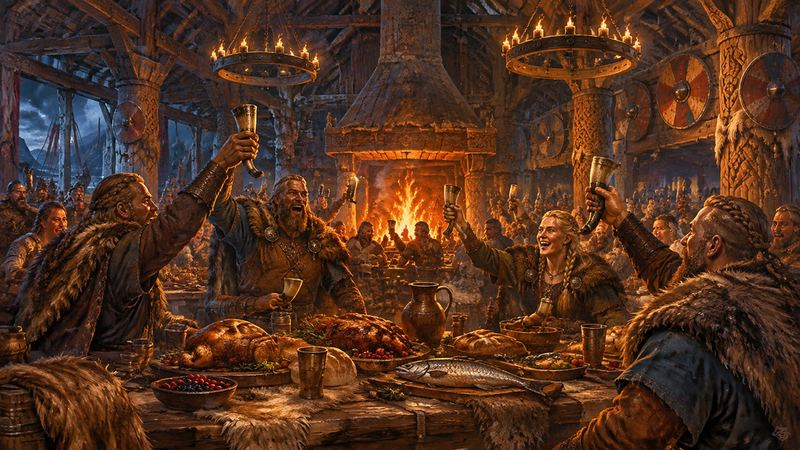
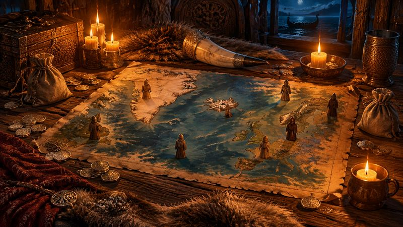
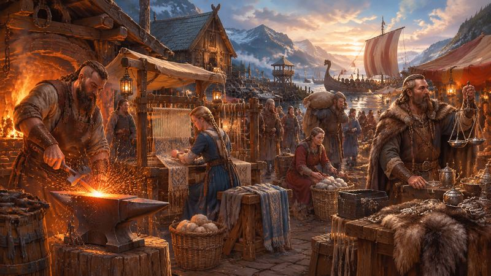
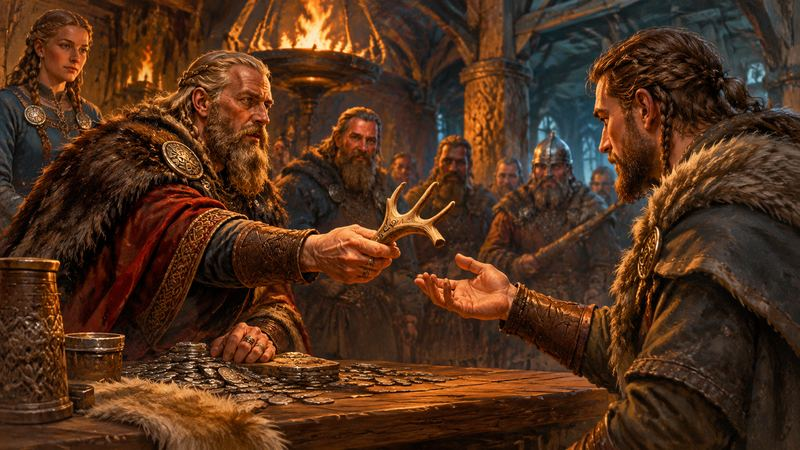
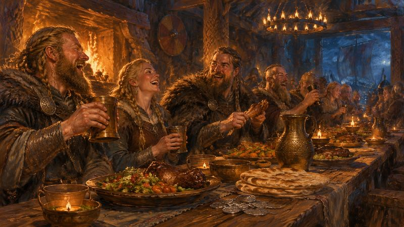
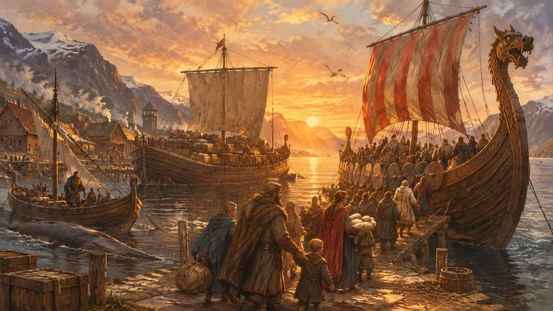
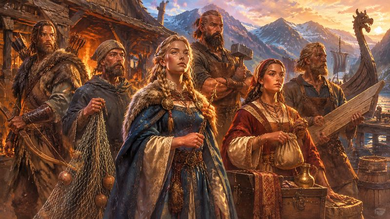

图文讲解16 节
01奥丁的盛宴

- 你是维京部族的首领：出海突袭、探索新岛、经营农牧和手工，把部族的财富攒起来。
- 标准模式（长局）打 7 轮，快速模式（短局）打 6 轮。游戏结束时，所有财产价值最高的玩家获胜；同分则并列获胜。
- 核心目标：用绿色和蓝色物品板块把部落版图的摆放区盖满。没盖住的负分格，终局都要扣分。
02开局准备

- 主行动版图放在桌子中间。四人局加上两块扩展板，随机决定朝上的一面；一到三人局不用。
- 特殊板块放在椭圆供应板上，三种船按类型分堆放在船只供应板上。
- 八条山脉板块洗混，翻开 2 条（四人局 3 条），放上图示的建筑资源，其余背面朝上作牌堆。
- 四块探索版图按「设得兰群岛、法罗群岛、冰岛、格陵兰岛」的顺序摆好；工棚、石屋、长屋分三堆；轮次标记放在 1。
03个人准备
- 每人拿一块部落版图：一面是标准模式 7 轮，一面是快速模式 6 轮，大家用同一面。
- 选一个颜色，拿 12 个维京人：在部落版图「宴会桌」的每个数字格各放 1 个（长局 7 个，短局 6 个），其余放到庭之广场，就是你的起始维京人。
- 每人抽 1 张浅棕色起始职业卡做手牌，再拿弓箭、陷阱、长矛武器卡各 1 张和 1 个蜂蜜酒。
- 随机决定谁拿起始玩家指示物（驼鹿）。新手建议只用 A 组职业卡。
04一轮的 12 个阶段
- 每轮依次进行：增加维京人、收获、翻转探索版图并放置银币、抽取武器卡牌、行动、决定起始玩家、收入、动物繁殖、宴会、奖励、设置山脉板块、取回维京人。
- 第 1 轮和最后一轮没有「翻转探索版图」。
- 最后一轮在宴会后立即结束：没有奖励、山脉板块和取回维京人。
- 本站「流程」页会按轮次逐个提示，每完成一个阶段点一下「下一阶段」。
05增加维京人与收获
- 增加维京人：每人从宴会桌最左边拿走维京人，放到庭之广场。每轮都有，第 1 轮也有。
- 空出来的格子就是当前轮数；格子下方印着这一轮的收获。
- 收获：按标记从供应区拿橙色农产品。标记 1 是豌豆、豆子、亚麻；2 再加谷物；3 再加卷心菜；4 再加水果。
- 标准模式 7 轮依次是：1、2、无、3、无、4、无。快速模式以部落版图上的标记为准。
06翻转探索版图
- 长局第 3 到 6 轮（短局第 2 到 5 轮），每轮把一块还没被占领的探索版图翻面：设得兰群岛变熊岛、法罗群岛变巴芬岛、冰岛变拉布拉多半岛、格陵兰岛变纽芬兰岛。
- 同时，其他没被占领的探索版图各放 2 银币；被翻面的板上原有的银币退回供应区。
- 用探索行动拿板时，板上的银币归你。设得兰群岛和法罗群岛只要任意一艘船和 1 个维京人；冰岛、格陵兰岛、熊岛要商船或长船和 2 个维京人；美洲的三块要长船和 3 个维京人。探索不会失去船。
07行动阶段

- 从起始玩家开始顺时针，每次把维京人放到一个空的行动格上，立刻执行。每个行动格每轮只能被占一次。
- 第 1、2、3、4 列的行动格，分别要放 1、2、3、4 个维京人。
- 在第 3 列放满 3 个维京人，执行前先抽 1 张深棕色职业卡；在第 4 列放满 4 个，可以额外打出 1 张职业卡。
- 可以随时停手，停手后本轮不能再放；维京人用完必须停。所有人都停手，行动阶段结束。
08决定起始玩家与收入

- 起始玩家：行动阶段最后放置维京人的玩家，拿起始玩家指示物，下一轮第一个行动。
- 收入：部落版图「收入对角线」上最小的未被盖住的数字，就是你领的银币。已占领的探索版图如有收入格，也同样领。
- 收入对角线要从小到大依次盖住：要盖一个数字，它左边、下边和左下方方块里的格子都必须已经盖住。
09动物繁殖
- 羊和牛分开算。有怀孕的：全部翻回不怀孕，再得 1 只新的。
- 没有怀孕的、但至少有 2 只：把其中 1 只翻成怀孕。所以牛羊每两轮生一次。
- 终局每只羊 2 分（怀孕 3 分），每头牛 3 分（怀孕 4 分）。新手常低估养殖的长期收益。
10宴会

- 宴会桌上没被维京人和移民船占住的格子，都要用橙色农产品、红色畜产品或「1 银币」摆满。
- 橙色不能挨橙色，红色不能挨红色，银币可以相邻，铁矿不能上桌。
- 同一种食物最多 1 块横放，其余同种只能竖放；每块都要压住桌下的格子，不能超出。
- 每个空着的格子拿 1 个庭之惩罚，终局每个扣 3 分。宴会结束后，桌上的东西退回供应区。
11奖励、山脉板块、取回维京人
- 奖励：部落版图上的物品格，自身没被盖住、周围格子却全被盖住（周围 8 格，靠边的 5 格），每轮给你一个这种物品。
- 山脉板块：每块翻开的山脉板块移走最左边的 1 项，最后的「2 银币」也算 1 项，空了就移出游戏。再翻开一块新山脉板块，用完就不再加。
- 取回维京人：把行动版图上的维京人收回庭之广场，开始下一轮。
12摆放物品
- 随时可以把绿色、蓝色物品板块、银币和铁矿放到部落版图和探索版图的空格上；放上去就不能拿回来。
- 绿色不能和绿色上下左右相邻（斜着可以）；蓝色、银币、铁矿可以和同类相邻。物品格算作已盖住。
- 石屋和长屋里可以放橙、红、绿、蓝物品和银币，但不能放铁矿；橙不挨橙、红不挨红。长屋中间的两根柱子不能盖。工棚和石屋上还有要用木头、石头盖的指定格。
- 摆错了要马上改；终局才发现的，每一对相邻违规的板块罚 1 个庭之惩罚。
13船只、突袭与移民

- 随时可以买船：捕鲸船 3 银币、商船 5、长船 8；也可以用造船行动花木头造。最多 3 艘捕鲸船、4 艘大船（商船和长船）。
- 突袭和抢劫要长船，掷骰要大；狩猎、设陷阱、捕鲸掷骰要小。最多掷 3 次，失败有安慰奖。
- 移民：花等于当前轮数的银币，把一艘商船或长船翻面，放到宴会桌最左边的空位。它不再是船，但以后每次宴会要摆的格子变少，终局商船 18 分、长船 21 分。
14职业卡

- 起始时手里有 1 张起始职业卡；之后通过行动或在第 3 列放满维京人抽新的。职业卡必须先打出，才能用效果。
- 黄色是立即生效一次；蓝色是随时可以用、可以用多次；红色是每次满足条件都触发；绿色是第一次满足条件时触发一次。
- 终局只算已经打出的职业卡，分值印在右上角，有的是负分。
15终局计分
- 游戏在最后一轮的宴会后立即结束。先把手边的木头、石头放到工棚和石屋的指定格，剩下的物品也可以继续摆到板上。
- 加分：船只（捕鲸船 3、商船 5、长船 8）、移民船（商船 18、长船 21）、探索版图分值、工棚 8 / 石屋 10 / 长屋 17、牛羊、已打出的职业卡、手边银币、最后一轮收入、英格兰王冠 2 分。
- 扣分：部落版图、探索版图、工棚和房屋上没盖住的负分格，加上每个庭之惩罚 3 分。
- 本站「计分」页按这些项目逐项填，合计实时更新。
16单人游戏
- 用两种颜色的维京人。第一种颜色放在宴会桌第 1 格 1 个（短局 2 个），第 3、5、7 格各 2 个；第二种颜色在第 2、4、6 格各 2 个。
- 第一种颜色 5 个放庭之广场，第二种颜色 5 个（短局 6 个）放等待区。上一轮放的维京人留在行动版图上挡格子。
- 总是你先行动，跳过「决定起始玩家」阶段；熟悉后也可以跳过「翻转探索版图」。100 分就是很好的成绩。
常见问题26 条
以下依据官方规则书整理，并非官方 FAQ，点开查看答案。具体某张职业卡的效果，请查规则书附录。
流程与起始玩家
下一轮谁当起始玩家？
每轮第 6 阶段，行动阶段里最后一个放置维京人的玩家拿起始玩家指示物（驼鹿），下一轮第一个行动。第一轮的起始玩家随机决定。 来源：规则书
标准模式（长局）和快速模式（短局）有什么不同？
长局打 7 轮，短局打 6 轮，部落版图分别用对应的一面，每轮的收获也不同。短局宴会桌上只放 6 个维京人，所以开局庭之广场多 1 个维京人；探索版图在第 2 到 5 轮翻面（长局是第 3 到 6 轮）。 来源：规则书
最后一轮有什么特别？
游戏在最后一轮的宴会阶段后立即结束：没有奖励阶段，也不调整山脉板块、不取回维京人。最后一轮的收入可以不领银币，改记到计分表的「最终收入」。 来源：规则书
行动阶段可以提前停手吗？
可以。即使庭之广场还有维京人，也可以选择停手，但停手后本轮不能再放。维京人用完必须停手。所有人都停手后，行动阶段结束。 来源：规则书
在第 3 列、第 4 列放维京人有什么额外好处？
在第 3 列放满 3 个维京人时，执行行动前先抽 1 张深棕色职业卡进手牌；在第 4 列放满 4 个维京人时，可以在执行行动前或后从手牌打出 1 张职业卡。 来源：规则书
宴会与食物
宴会桌上的食物怎么摆？
在宴会桌上没被维京人和移民船占住的格子里，摆橙色农产品、红色畜产品或「1 银币」。橙色不能挨橙色，红色不能挨红色，银币可以相邻，铁矿不能上桌。每块都要压住桌下的格子、不能超出。 来源：规则书
同一种食物可以横放好几块吗？
不行。同一种食物最多只能有 1 块横放，其余同种的只能竖放（正方形板块不受影响）。所以每次宴会最好不要重复上同一种大块肉。 来源：规则书
宴会桌没摆满会怎样？
每个空着没摆东西的格子，拿 1 个庭之惩罚放进自己的供应区，一直保留到游戏结束，终局每个扣 3 分。 来源：规则书
移民为什么能让宴会变轻松？
移民时把一艘商船或长船翻面，放到宴会桌最左边的空位，之后每次宴会它都占住格子，要摆的食物就少了。移民船终局商船值 18 分、长船值 21 分。 来源：规则书
摆放与收入
部落版图上的物品怎么摆？
随时可以把绿色、蓝色物品板块和银币、铁矿放到空格上。绿色不能和绿色上下左右相邻（斜着可以）；蓝色、银币、铁矿可以和同类相邻。放上去就不能再拿回来。 来源：规则书
收入怎么算？收入对角线怎么盖？
收入阶段领的银币，等于收入对角线上最小的未被盖住的数字。对角线要从小到大盖：要盖某个数字，它左边、下边以及左下方方块里的格子都必须已经盖住。印着物品图案的格子算作已经盖住。 来源：规则书
奖励阶段怎么拿物品？
部落版图上的物品格如果自身没被盖住，而它周围的格子全被盖住（周围 8 格，靠边的只有 5 格），每轮奖励阶段你都得到这种物品。如果把物品格本身盖住，就失去这个奖励。 来源：规则书
房屋里能放什么？
石屋和长屋里可以放橙、红、绿、蓝物品和银币，但不能放铁矿；橙色不能挨橙色，红色不能挨红色。长屋中间的两根柱子不能盖。工棚和石屋还有要用木头、石头盖的指定格，终局时可以把手边的木头、石头放上去。 来源：规则书
摆错了、相邻违规了怎么办？
发现了要马上改正。如果到终局才发现，每一对违规相邻的板块，罚 1 个庭之惩罚（每个 −3 分）。 来源：规则书
船只与行动
船怎么获得？最多能有几艘？
随时可以花银币买船：捕鲸船 3、商船 5、长船 8；也可以用造船行动花木头建造。船停在部落版图的港湾里，最多 3 艘捕鲸船和 4 艘大船（商船和长船）。同一艘船一轮内可以用于多个不同的行动。 来源：规则书
突袭、抢劫、狩猎怎么掷骰？
突袭用橙色 8 面骰、抢劫用蓝色 12 面骰，都要掷大；狩猎、设陷阱用橙色骰、捕鲸用蓝色骰，都要掷小。每次最多掷 3 次，重掷会作废上一次，随时可以停。失败时可以拿安慰奖。 来源：规则书
抢劫时长船上的铁矿有什么用？
抢劫必须有长船，有多艘时用铁矿最多的那艘；骰子结果每有 1 个铁矿加 1（铁矿保留）。还可以花石头、长剑每个再加 1。突袭（橙色骰）则不能用船上的铁矿。 来源：规则书
探索需要什么条件？
设得兰群岛、法罗群岛：任意一艘船，1 个维京人（只能用 1 个维京人的行动格）。冰岛、格陵兰岛、熊岛：商船或长船，2 个维京人。巴芬岛、拉布拉多半岛、纽芬兰岛：长船，3 个维京人。探索不会失去船，板上的银币归你。 来源：规则书
移民要花多少钱？
移民要支付等于当前轮数的银币，然后把一艘商船或长船翻面放到宴会桌上。长船上的铁矿会失去。维京人不会因为移民减少。 来源：规则书
四人局的灰色扩展格是做什么的？
四人局的扩展板上，灰色行动格可以模仿同一列里已被其他玩家占用的行动格（不能模仿空格或自己占的格子）。每局只有两列有模仿格，开局随机决定扩展板朝上的面。 来源：规则书
计分
终局怎么计分？
加分：船只（捕鲸船 3、商船 5、长船 8）、移民船（商船 18、长船 21）、探索版图分值、工棚 8 / 石屋 10 / 长屋 17、羊 2（怀孕 3）、牛 3（怀孕 4）、已打出的职业卡、手边银币、最终收入、英格兰王冠 2 分。扣分：部落版图、探索版图、房屋上没盖住的负分格，以及每个庭之惩罚 3 分。 来源：规则书
放在板上的银币算分吗？
不算。只有手边供应区里的银币按面值计分，已经放在部落版图、探索版图或房屋上的银币不再计分（它的作用是盖住格子）。 来源：规则书
同分怎么办？
规则书规定同分时并列获胜，没有额外的比较规则。本站结算页会显示「并列第一」。 来源：规则书
英格兰王冠怎么得？
英格兰王冠是剑值最高的特殊板块。突袭或抢劫成功时，可以拿剑值不超过战斗结果的蓝色物品或特殊板块；王冠是唯一不能用「购买特殊板块」行动买的特殊板块。持有者终局额外得 2 分，不管它在供应区还是已经摆在板上。 来源：规则书
职业卡怎么计分？
只计已经打出的职业卡，分值印在卡的右上角，有的职业卡是负分（规则书举的例子是一张 −1 分的职业卡）。手里没打出的职业卡不计分。 来源：规则书
单人游戏
单人游戏怎么玩？
用两种颜色的维京人：上一轮放的维京人留在行动版图上挡住行动格。你总是先行动，跳过「决定起始玩家」阶段；熟悉后也可以跳过「翻转探索版图」。100 分就算很好的成绩。 来源：规则书